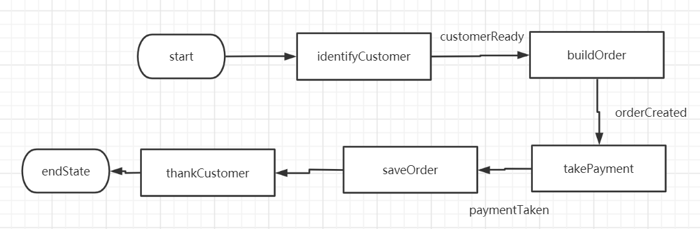
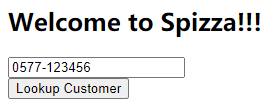
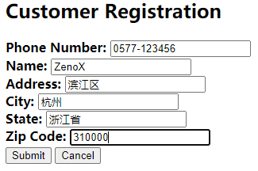
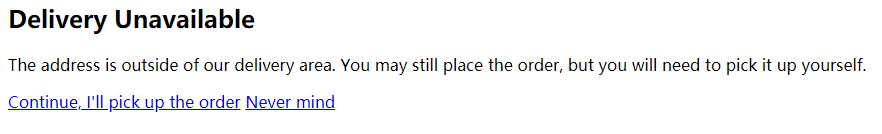
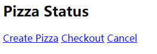
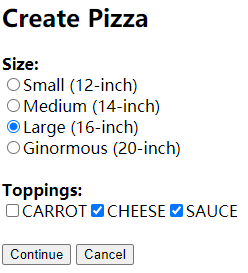
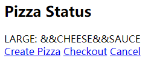
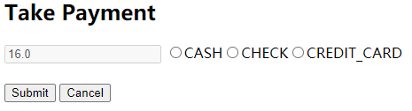
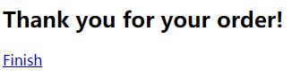

前言 一般我们在构建基于模板的Web应用时，会使用SpringMVC，模板技术可能会选择jsp、thymeleaf、freemarker等，如果Model、View、Controller各层次之间的交互和跳转比较简单的话，自然是再好不过的了，但如果比较复杂的话，那么一般的MVC模式就显得吃力不讨好了。
SpringWebFlow是一种基于SpringMVC的web流程框架，我们可以用它来管理Model和View的交互，是的，你没看错，甚至连一个Controller也不需要写，就可以完成一整个Web应用。
我们的Web应用一般都是以一个个流程 组成的，比如现在有这样一个需求，披萨店需要一个Web应用来让客户订购披萨，将整个应用转换为流程，如下图所示。

整个流程无非就是识别用户->创建订单->支付订单->保存订单，使用SpringWebFlow可以很直观的将它实现，而不需要写Controller层。
流程基本概念 在Spring Web Flow中，有三个主要的组成部分，即状态(state)、转移(transition)、流程数据。
假设一个完整流程是这样的。
A->B->C
那么A、B、C三个节点就是状态，而转移是三个节点之间的横线，它关注的是如何从一个状态转到另一个状态，在几个节点之间传递的就是流程数据。
状态 状态有5种类型。
状态类型
作用
行为（Action）
简单地执行逻辑
决策（Decision）
即分支节点，根据运行结果决定走向哪个状态
结束（End）
执行结束状态后，整个流程宣告结束
子流程（Subflow）
在当前状态的上下文中启动一个全新的流程，子流程走完以后继续原流程的执行，也就是说一个节点代表一个流程
视图（View）
将视图返回给用户，用户使用完视图后，才继续执行原流程
视图状态 一般来说，如果没有视图状态，则整个流程是根据用户最开始的输入自动执行的。
而如果在流程中中定义了一个视图状态（View State），则会向用户展示一个视图，用户通过视图进行输入，从而影响到流程后续走向。
1 <view-state id ="welcome" view ="greeting" model ="flowScope.paymentDetails" />
用view-state标签来表示视图状态，如果只提供一个id，比如id=”welcome”，则代表该状态的id为welcome，其对应的视图名也为welcome；提供view属性可以指定该state对应的view名；提供model属性可以指定该view绑定一个model对象，比如上面的例子，从flow作用域中取出paymentDetails对象，并交给greeting视图使用。
行为状态 简单执行一些逻辑，并转移到另一个状态。
1 2 3 4 5 6 7 <action-state id ="saveOrder" > <evaluate expression ="pizzaFlowActions.saveOrder(order)" /> <transition to ="thankYou" /> </action-state >
evaluate子标签可以填一个表达式（可以是SpEL、OGNL、Unified EL），比如上面的例子中，代表要执行pizzaFlowActions这个bean里的saveOrder方法。
transition子标签指明下一个状态走哪个，上面的例子中，下一个状态是thankYou。
决策状态 根据表达式的返回值是true或false决定后续往哪个状态走。
1 2 3 4 5 6 7 8 9 <decision-state id ="checkDeliveryArea" > <if test ="pizzaFlowActions.checkDeliveryArea(customer.zipCode)" then ="addCustomer" else ="deliveryWarning" /> </decision-state >
比如上面这个例子中，根据pizzaFlowActions的checkDeliveryArea方法的返回值决定下一个状态走addCustomer还是走deliverWarning
子流程状态 即一个节点对应一个独立的流程，这个独立流程走完后才返回原流程执行，可以类比成在一个方法中调用另一个方法。
1 2 3 4 5 6 7 <subflow-state id ="order" subflow ="pizza/order" > <input name ="order" value ="order" /> <transition on ="orderCreated" to ="payment" /> </subflow-state >
上面这个例子中，状态名为order，它所对应的子流程为pizza/order，input标签指明了子流程的输入，即order对象，transition标签指出了当子流程的end-state即orderCreated执行完后，原流程order将转移到payment状态。
结束状态 结束状态执行完后，接下来发生什么？不一定
如果这个end-state属于一个子流程，则这个end-state的id将作为一个事件，决定原流程接下来走哪个状态，可以参照子流程状态的例子。
如果end-state设置了view属性，则将展示指定的视图（相对于流程路径的视图模板），如果view属性加上externalRedirect的话，可以重定向到流程外部的页面；如果view属性加上flowRedirect前缀，将重定向到另一个流程中。
如果既没有设置view也不是属于子流程，则流程结束，等待用户输入并执行下一个流程。
转移 转移是流程中各状态的连接线，可以用于action-state、view-state、subflow-state（end-state是最终节点，而decisition-state不需要指定transition）。
一个最简单的转移可以这样定义。
1 <transition to ="customerReady" />
即直接指明了后面转移到customerReady状态，只有在当前状态单一出口时才可以这样定义。
如果当前状态有多个出口，那么就需要根据on属性来决定走哪个转移，on属性绑定了一个事件。
比如
视图状态是根据用户在视图的输入产生相应的on事件，在行为状态中，事件是evaluate表达式执行的结果，在子流程状态中，事件是子流程的结束状态的id。
或者也可以根据抛出的异常决定转移到哪个状态。
1 <transition on-exception ="com.springinaction.pizza.service.CustomerNotFoundException" to ="regisrationForm" />
全局转移 如果某些转移需要被引用多次，可以将其定义为全局转移。
transition可以定义为global-transition的子元素。
1 2 3 4 5 <global-transition > <transition on-exception ="a" to ="b" > </global-transition >
比如上面这个例子，所有的状态都将拥有这个转移，当前状态抛出a异常，则转移到b状态。
流程数据 流程数据是保存在变量中的，可以设置这些数据的作用于，是只能在视图里访问？还是只能在当前流程访问？还是能被多个流程访问？
最简单的变量可以这样定义，这种变量将在整个流程内有效。
1 <var name ="cutomer" class ="com.springinaction.pizza.domain.Customer" />
也可以用evaluate或者set元素来声明变量，比如下面这样。
1 <evaluate expression ="T(com.springinaction.pizza.domain.Topping.asList())" result ="viewScope.toppingsList" />
上面的例子中，执行了expression，并将表达式结果放到viewScope中的toppingsList变量内。
1 <set name ="flowScope.pizza" value ="new com.springinaction.pizza.domain.Pizza()" />
上面的例子中，将new出来的Pizza对象放到flowScope的pizza变量内。
数据作用域 有5种作用域。
范围
可见性
Conversation
在整个流程包括其子流程内可用
Flow
在当前流程内可用，可能局限于一个子流程内
Request
一个请求内可用，如果一个请求内走了多个流程（比如重定向了多次），则这些流程都可用
Flash
从当前流程开始时可用，如果在这个流程中渲染了视图，则数据会被清除，如果没渲染视图，则一直可用
View
只在视图状态下可用
完整案例：披萨订购 这个案例将完整讲述从流程抽象、配置，到实现的过程，是我从Spring实战第四版书上找到的，原书的代码只有一部分，我根据原有代码结合整个流程，实现了一遍。
Maven依赖 注意除了SpringMVC依赖外，还需要引入SpringWebFlow的依赖，此外为了方便我们写View层的代码，也要引入JSTL。
1 2 3 4 5 6 7 8 9 10 11 12 13 14 15 16 17 18 19 20 21 22 23 24 25 26 27 28 29 30 31 32 33 34 35 36 37 38 39 40 41 42 43 44 45 46 47 48 49 50 51 52 53 54 55 56 57 58 <dependencies > <dependency > <groupId > junit</groupId > <artifactId > junit</artifactId > <version > 4.11</version > <scope > test</scope > </dependency > <dependency > <groupId > org.springframework</groupId > <artifactId > spring-beans</artifactId > <version > 5.2.12.RELEASE</version > </dependency > <dependency > <groupId > org.springframework</groupId > <artifactId > spring-context</artifactId > <version > 5.2.12.RELEASE</version > </dependency > <dependency > <groupId > org.springframework</groupId > <artifactId > spring-core</artifactId > <version > 5.2.12.RELEASE</version > </dependency > <dependency > <groupId > org.springframework</groupId > <artifactId > spring-web</artifactId > <version > 5.2.12.RELEASE</version > </dependency > <dependency > <groupId > org.springframework</groupId > <artifactId > spring-webmvc</artifactId > <version > 5.2.12.RELEASE</version > </dependency > <dependency > <groupId > org.springframework.webflow</groupId > <artifactId > spring-webflow</artifactId > <version > 2.5.1.RELEASE</version > </dependency > <dependency > <groupId > org.projectlombok</groupId > <artifactId > lombok</artifactId > <version > 1.18.16</version > </dependency > <dependency > <groupId > jstl</groupId > <artifactId > jstl</artifactId > <version > 1.2</version > </dependency > </dependencies >
配置 除了对SpringMVC进行配置以外，还需要对SpringWebFlow进行配置，下面将分别对各个配置文件进行展示。
web.xml 这边只需要配置一个DispatcherServlet即可，可以顺手把Spring配置文件也指定了，比如这个例子中是/WEB-INF/applicationContext.xml
1 2 3 4 5 6 7 8 9 10 11 12 13 14 15 16 17 18 19 20 21 22 23 24 25 26 27 28 <!DOCTYPE web-app PUBLIC "-//Sun Microsystems, Inc.//DTD Web Application 2.3//EN" "http://java.sun.com/dtd/web-app_2_3.dtd" > <web-app > <display-name > Archetype Created Web Application</display-name > <listener > <listener-class > org.springframework.web.context.ContextLoaderListener</listener-class > </listener > <servlet > <servlet-name > dispatcherServlet</servlet-name > <servlet-class > org.springframework.web.servlet.DispatcherServlet</servlet-class > <init-param > <param-name > contextConfigLocation</param-name > <param-value > /WEB-INF/applicationContext.xml</param-value > </init-param > <load-on-startup > 1</load-on-startup > </servlet > <servlet-mapping > <servlet-name > dispatcherServlet</servlet-name > <url-pattern > /</url-pattern > </servlet-mapping > <welcome-file-list > <welcome-file > /WEB-INF/jsp/index.jsp</welcome-file > </welcome-file-list > </web-app >
SpringMVC配置 SpringMVC只需要简单给其配置一个视图解析器即可，我这里单独建了一个文件web-mvc.xml，将其放在classpath下。
1 2 3 4 5 6 7 8 9 10 11 12 13 <?xml version="1.0" encoding="UTF-8"?> <beans xmlns ="http://www.springframework.org/schema/beans" xmlns:xsi ="http://www.w3.org/2001/XMLSchema-instance" xmlns:mvc ="http://www.springframework.org/schema/mvc" xsi:schemaLocation ="http://www.springframework.org/schema/beans http://www.springframework.org/schema/beans/spring-beans.xsd" > <bean id ="viewResolver" class ="org.springframework.web.servlet.view.InternalResourceViewResolver" > <property name ="viewClass" value ="org.springframework.web.servlet.view.JstlView" /> <property name ="prefix" value ="/WEB-INF/jsp/" /> <property name ="suffix" value =".jsp" /> </bean > </beans >
SpringWebFlow配置 这个例子中，我将SpringWebFlow的配置全都写在classpath下的web-flow.xml中。
1 2 3 4 5 6 7 8 9 10 11 12 13 14 15 16 17 18 19 20 21 22 23 24 25 26 27 28 29 30 31 32 33 34 35 36 <beans xmlns ="http://www.springframework.org/schema/beans" xmlns:xsi ="http://www.w3.org/2001/XMLSchema-instance" xmlns:flow ="http://www.springframework.org/schema/webflow-config" xsi:schemaLocation =" http://www.springframework.org/schema/beans http://www.springframework.org/schema/beans/spring-beans.xsd http://www.springframework.org/schema/webflow-config http://www.springframework.org/schema/webflow-config/spring-webflow-config.xsd" > //流程执行器，用来管理flowRegistry <flow:flow-executor id ="flowExecutor" flow-registry ="flowRegistry" /> //注册流程，这里我将所有的flow都放在了/WEB-INF/flows/pizza目录下，并且每个流程定义都以-flow.xml结尾 <flow:flow-registry id ="flowRegistry" flow-builder-services ="flowBuilderServices" base-path ="/WEB-INF/flows/pizza" > <flow:flow-location-pattern value ="*-flow.xml" /> </flow:flow-registry > //为了让SpringWebFlow的视图解析通过我们已经配置好的视图解析器，配置一个flow-builder-services，将view-factory-creator指定为一个自定义的mvcViewFactoryCreator <flow:flow-builder-services id ="flowBuilderServices" view-factory-creator ="mvcViewFactoryCreator" /> <bean id ="mvcViewFactoryCreator" class ="org.springframework.webflow.mvc.builder.MvcViewFactoryCreator" > <property name ="viewResolvers" ref ="viewResolver" /> </bean > //将flowExecutor指定给FlowHandlerAdapater，可以类比成SpringMVC的HandlerAdapter，即可以像访问普通Controller接口那样访问流程 <bean id ="flowHandlerAdapter" class ="org.springframework.webflow.mvc.servlet.FlowHandlerAdapter" > <property name ="flowExecutor" ref ="flowExecutor" /> </bean > //流程与Controller接口的映射， <bean class ="org.springframework.webflow.mvc.servlet.FlowHandlerMapping" id ="flowHandlerMapping" > <property name ="flowRegistry" ref ="flowRegistry" /> </bean > </beans >
Spring主配置文件 这边是最简单的，直接导入我们已经写好的web-mvc.xml和web-flow.xml即可，由于这个案例没有使用SpringBoot，所以顺手写一个自动组件扫描的配置。
1 2 3 4 5 6 7 8 9 10 11 12 13 14 15 <?xml version="1.0" encoding="UTF-8"?> <beans xmlns ="http://www.springframework.org/schema/beans" xmlns:xsi ="http://www.w3.org/2001/XMLSchema-instance" xmlns:context ="http://www.springframework.org/schema/context" xsi:schemaLocation ="http://www.springframework.org/schema/beans http://www.springframework.org/schema/beans/spring-beans.xsd http://www.springframework.org/schema/context https://www.springframework.org/schema/context/spring-context.xsd" > <import resource ="classpath:web-mvc.xml" /> <import resource ="classpath:web-flow.xml" /> <context:component-scan base-package ="org.zh.pizza" /> <context:annotation-config /> </beans >
流程实现 整个项目实际上是一个主流程，其内部包含了若干个子流程，下面就先介绍主流程spizza-flow。
spizza-flow主流程 主流程的图示如下，简单介绍一下，首先进入identifyCustomer子流程，即识别用户，识别完成后，触发customerReady转移，如前文所介绍的，你可以把转移视为一种事件，即identifyCustomer这个流程触发了customerReady这个事件；后续的builderOrder、takePayment都是子流程，而saveOrder是一个动作状态，thankCustomer是一个视图状态，整个流程走完后，回到start处重新开始。
看看spizza-flow的xml定义，如下图所示。
1 2 3 4 5 6 7 8 9 10 11 12 13 14 15 16 17 18 19 20 21 22 23 24 25 26 27 28 29 30 31 32 33 34 35 36 37 38 39 40 41 42 43 44 45 46 47 <?xml version="1.0" encoding="UTF-8"?> <flow xmlns ="http://www.springframework.org/schema/webflow" xmlns:xsi ="http://www.w3.org/2001/XMLSchema-instance" xsi:schemaLocation ="http://www.springframework.org/schema/webflow http://www.springframework.org/schema/webflow/spring-webflow-2.0.xsd" start-state ="identifyCustomer" > //Order作为整个流程贯穿始终的参数，使用var标签定义 <var name ="order" class ="org.zh.pizza.domain.Order" /> //identifyCustomer子流程，使用subflow属性来指向另一个流程 <subflow-state id ="identifyCustomer" subflow ="customer-flow" > //output可以理解为identifyCustomer这个流程的返回值,value属性为Spel表达式 <output name ="customer" value ="order.customer" /> //触发customerReady转移，跳转至下一个子流程buildeOrder <transition on ="customerReady" to ="buildOrder" /> </subflow-state > <subflow-state id ="buildOrder" subflow ="order-flow" > //由于builderOrder内部需要用到order对象，所以使用input标签作为该子流程的入参 <input name ="order" value ="order" /> <transition on ="orderCreated" to ="takePayment" /> </subflow-state > <subflow-state id ="takePayment" subflow ="payment-flow" > <input name ="order" value ="order" /> <transition on ="paymentTaken" to ="saveOrder" /> </subflow-state > <action-state id ="saveOrder" > //evaluate可以用来处理一个Spel表达式 <evaluate expression ="pizzaFlowActions.saveOrder(order)" /> <transition to ="thankCustomer" /> </action-state > <view-state id ="thankCustomer" > <transition to ="endState" /> </view-state > //整个流程结束 <end-state id ="endState" /> <global-transitions > //如果在任意的流程中触发了cancel转移，则直接跳转至endState <transition on ="cancel" to ="endState" /> </global-transitions > </flow >
这里不关注Spel表达式背后的具体方法实现，如果你想要自己实现，可以直接到我的Github下载源码，地址贴在本文最后。
接下来会分别介绍各个子流程。
identifyCustomer子流程 identifyCustomer是这个子流程的id，而真正的流程定义是写在customer-flow.xml内的，这点需要注意一下。
可以注意到，identifyCustomer子流程并没有任何输入变量，也就是说这个流程的角色是一个单纯的生产者。
1 2 3 4 5 6 7 8 9 10 11 12 13 14 15 16 17 18 19 20 21 22 23 24 25 26 27 28 29 30 31 32 33 34 35 36 37 38 39 40 41 42 43 44 45 46 47 48 49 50 51 52 53 54 55 56 57 58 <?xml version="1.0" encoding="UTF-8"?> <flow xmlns ="http://www.springframework.org/schema/webflow" xmlns:xsi ="http://www.w3.org/2001/XMLSchema-instance" xsi:schemaLocation ="http://www.springframework.org/schema/webflow http://www.springframework.org/schema/webflow/spring-webflow-2.0.xsd" > //定义子流程的全局变量customer <var name ="customer" class ="org.zh.pizza.domain.Customer" /> //进入welcome视图，这里需要注意以下一般视图状态对应的是同名的视图，即welcome状态对应welcome.jsp视图 <view-state id ="welcome" > <transition on ="phoneEntered" to ="lookupCustomer" /> </view-state > <action-state id ="lookupCustomer" > //检查用户输入的手机号是否存在，若不存在，触发CustomerNotFoundException，并转移至registrationForm视图；若用户输入的手机号存在，则转移至customerReady状态 <evaluate expression ="pizzaFlowActions.lookupCustomer(requestParameters.phoneNumber)" result ="customer" /> <transition on-exception ="org.zh.pizza.exception.CustomerNotFoundException" to ="registrationForm" /> <transition to ="customerReady" /> </action-state > //注册表单视图，将customer绑定为该视图的model <view-state id ="registrationForm" model ="customer" > //on-entry的作用是在进入这个视图时做一些操作，比如这个例子中，是将lookupCustomer中用户输入的手机号绑定到customer对象内 <on-entry > <evaluate expression ="customer.phoneNumber = requestParameters.phoneNumber" /> </on-entry > <transition to ="checkDeliveryArea" on ="submit" /> </view-state > //决策状态，通过checkDeliveryArea方法的执行结果，决定是进入addCustomer或者是deliveryWarning两个分支 <decision-state id ="checkDeliveryArea" > <if test ="pizzaFlowActions.checkDeliveryArea(customer.zipCode)" then ="addCustomer" else ="deliveryWarning" /> </decision-state > <view-state id ="deliveryWarning" > <transition on ="accept" to ="addCustomer" /> </view-state > <action-state id ="addCustomer" > <evaluate expression ="pizzaFlowActions.addCustomer(customer)" /> <transition to ="customerReady" /> </action-state > //这里的end-state的id为cancel，这与外层主流程的global-transition的cancel转移是一样的，即这里触发cancel结束状态，回到原流程时，触发cancel转移 <end-state id ="cancel" /> //如果时进入的时customerReady的end-state，则返回原流程的同时，将customer作为返回值返回 <end-state id ="customerReady" > <output name ="customer" /> </end-state > <global-transitions > <transition on ="cancel" to ="cancel" > </transition > </global-transitions > </flow >
来看看welcome视图的定义，实际上，在SpringWebFlow中，视图层要关心的东西并不多，只是作为一个人机交互的层次。但有一点时需要注意的，即即如何确定视图触发哪个转移（触发事件），以及怎么从视图回到原先的流程中，注意这里需要导入Spring标签库。
1 2 3 4 5 6 7 8 9 10 11 12 13 14 15 16 17 18 19 20 21 22 <%@ taglib prefix="form" uri="http://www.springframework.org/tags/form" %> <%-- Created by IntelliJ IDEA. User: Administrator Date: 2021/4/5 Time: 13:49 To change this template use File | Settings | File Templates. --%> <%@ page contentType="text/html;charset=UTF-8" language="java" isELIgnored="false"%> <html > <head > <title > Spizza</title > </head > <body > <h2 > Welcome to Spizza!!!</h2 > <form:form > <input type ="hidden" name ="_flowExecutionKey" value ="${flowExecutionKey}" /> <input type ="text" name ="phoneNumber" /> <br > <input type ="submit" name ="_eventId_phoneEntered" value ="Lookup Customer" /> </form:form > </body > </html >
现在来回答前面的两个问题，如何触发某个转移？将input的name设置为**_event_id_XXX**即可，其中XXX就是要触发的转移。如何从视图回到原先的流程里？在表单里设置一个隐藏域，name为_flowExecutionKey，值是从流程进入视图时自动带过来的，使用EL表达式获取它并设置到value里即可。注意这里一定得使用Spring标签库的form，否则flowExecutionKey和eventId都是不起作用的。
再看看deliveryWarning视图，它没有表单，但是它使用的是a标签去控制跳转。
1 2 3 4 5 6 7 8 9 10 11 12 13 14 15 16 17 18 19 <%-- Created by IntelliJ IDEA. User: Administrator Date: 2021/4/5 Time: 14:15 To change this template use File | Settings | File Templates. --%> <%@ page contentType="text/html;charset=UTF-8" language="java" isELIgnored="false"%> <html > <head > <title > Spizza</title > </head > <body > <h2 > Delivery Unavailable</h2 > <p > The address is outside of our delivery area. You may still place the order, but you will need to pick it up yourself.</p > <a href ="${flowExecutionUrl}&_eventId=accept" > Continue, I'll pick up the order</a > <a href ="${flowExecutionUrl}&_eventId=cancel" > Never mind</a > </body > </html >
注意，这里a标签使用了flowExecutionUrl，它代表的原流程的地址，回到原流程的同时，我们一般还会触发一个事件，所以也带上_eventId。
buildOrder子流程 buildOrder流程是与用户交互，生成订单的，用户可以订购一个或多个披萨。
1 2 3 4 5 6 7 8 9 10 11 12 13 14 15 16 17 18 19 20 21 22 23 24 25 26 27 28 29 30 31 32 33 <?xml version="1.0" encoding="UTF-8"?> <flow xmlns ="http://www.springframework.org/schema/webflow" xmlns:xsi ="http://www.w3.org/2001/XMLSchema-instance" xsi:schemaLocation ="http://www.springframework.org/schema/webflow http://www.springframework.org/schema/webflow/spring-webflow-2.0.xsd" > //将外部传进来的order对象作为本流程的全局参数 <input name ="order" required ="true" /> <view-state id ="showOrder" > <transition on ="createPizza" to ="createPizza" /> <transition on ="checkout" to ="orderCreated" /> <transition on ="cancel" to ="cancel" /> </view-state > //将flow作用域的pizza作为model，进入createPizza视图 <view-state id ="createPizza" model ="flowScope.pizza" > //进入createPizza视图时，自动new一个Pizza并放入flow作用域 <on-entry > <set name ="flowScope.pizza" value ="new org.zh.pizza.domain.Pizza()" /> //注意这里还执行了一下Topping类的静态方法asList，实际上Topping是个枚举类，即配料，将配料的枚举作为List放入view作用域 <evaluate expression ="T(org.zh.pizza.domain.Topping).asList()" result ="viewScope.toppingsList" /> </on-entry > <transition on ="addPizza" to ="showOrder" > <evaluate expression ="order.addPizza(flowScope.pizza)" /> </transition > <transition on ="cancel" to ="showOrder" > </transition > </view-state > <end-state id ="cancel" /> <end-state id ="orderCreated" /> </flow >
先看看showOrder视图，这是buildOrder子流程的一个主要视图，主要是显示用户已经点过的披萨和配料，除了查看订单，还可以继续创建披萨或者直接进入支付流程。
1 2 3 4 5 6 7 8 9 10 11 12 13 14 15 16 17 18 19 20 21 22 23 24 25 26 <%@ taglib prefix="form" uri="http://www.springframework.org/tags/form" %> <%-- Created by IntelliJ IDEA. User: Administrator Date: 2021/4/5 Time: 15:01 To change this template use File | Settings | File Templates. --%> <%@ page contentType="text/html;charset=UTF-8" language="java" isELIgnored="false" %> <%@ taglib uri="http://java.sun.com/jsp/jstl/core" prefix="c" %> <html > <head > <title > Spizza</title > </head > <body > <h2 > Pizza Status</h2 > <c:forEach var ="pizza" items ="${order.pizzas}" > ${pizza.size}: <c:forEach items ="${pizza.toppings}" var ="topping" > &&${topping}</c:forEach > <br > </c:forEach > <a href ="${flowExecutionUrl}&_eventId=createPizza" > Create Pizza</a > <a href ="${flowExecutionUrl}&_eventId=checkout" > Checkout</a > <a href ="${flowExecutionUrl}&_eventId=cancel" > Cancel</a > </body > </html >
添加披萨的视图createPizza如下所示，注意form:form标签可以使用modelAttribute来绑定model对象，这边绑定的是流程传过来的Pizza对象。
1 2 3 4 5 6 7 8 9 10 11 12 13 14 15 16 17 18 19 20 21 22 23 24 25 26 27 28 29 30 <%@ taglib prefix="form" uri="http://www.springframework.org/tags/form" %> <%-- Created by IntelliJ IDEA. User: Administrator Date: 2021/4/5 Time: 14:20 To change this template use File | Settings | File Templates. --%> <%@ page contentType="text/html;charset=UTF-8" language="java" isELIgnored="false" %> <html > <head > <title > Spizza</title > </head > <body > <h2 > Create Pizza</h2 > <form:form modelAttribute ="pizza" > <input type ="hidden" name ="_flowExecutionKey" value ="${flowExecutionKey}" /> <b > Size: </b > <br > <form:radiobutton path ="size" label ="Small (12-inch)" value ="SMALL" /> <br > <form:radiobutton path ="size" label ="Medium (14-inch)" value ="MEDIUM" /> <br > <form:radiobutton path ="size" label ="Large (16-inch)" value ="LARGE" /> <br > <form:radiobutton path ="size" label ="Ginormous (20-inch)" value ="GINORMOUS" /> <br > <br > <b > Toppings: </b > <br > <form:checkboxes path ="toppings" items ="${toppingsList}" /> <br > <br > <input type ="submit" class ="button" name ="_eventId_addPizza" value ="Continue" /> <input type ="submit" class ="button" name ="_eventId_cancel" value ="Cancel" /> </form:form > </body > </html >
takePayment子流程 takePayment子流程实际上相比buildOrder而言，并没有什么太多的特别之处，这边的视图略过不提，如果你想看完整的代码，可以从Github上下载源码。
1 2 3 4 5 6 7 8 9 10 11 12 13 14 15 16 17 18 19 20 21 22 23 24 25 26 27 <?xml version="1.0" encoding="UTF-8"?> <flow xmlns ="http://www.springframework.org/schema/webflow" xmlns:xsi ="http://www.w3.org/2001/XMLSchema-instance" xsi:schemaLocation ="http://www.springframework.org/schema/webflow http://www.springframework.org/schema/webflow/spring-webflow-2.0.xsd" > <input name ="order" required ="true" /> <view-state id ="takePayment" model ="flowScope.paymentDetails" > <on-entry > <set name ="flowScope.paymentDetails" value ="pizzaFlowActions.generatePayment(order)" /> <evaluate expression ="T(org.zh.pizza.domain.PaymentType).asList()" result ="viewScope.paymentTypeList" /> </on-entry > <transition on ="paymentSubmitted" to ="verifyPayment" /> <transition on ="cancel" to ="cancel" /> </view-state > <action-state id ="verifyPayment" > <evaluate expression ="pizzaFlowActions.verifyPayment(flowScope.paymentDetails)" result ="order.payment" /> <transition to ="paymentTaken" /> </action-state > <end-state id ="cancel" /> <end-state id ="paymentTaken" /> </flow >
运行效果 进入流程后，第一个看到的页面为welcome.jsp。

如果没有注册过，进入registrationForm.jsp，注意这里输入的zipCode是会接收检查的。

若zipCode检查不通过，会进入deliveryWarning.jsp。

点击第一个超链接，进入showOrder.jsp，一开始没有任何订单，你可以点击Create Pizza来创建披萨，也可以点击Checkout前往支付。

如果点击Create Pizza，则需要选择披萨尺寸和配料。

重新回到订单页面，可以看到最新的订单信息已经同步过来了。

点击支付Checkout，系统会自动计算费用，我们自己要做的仅仅只是勾选支付方式。

完成整个流程，进入thankCustomer.jsp，点击finish，即可回到首页。

在这个过程中，点击任意的Cancel按钮，都会触发cancel转移，从而结束整个流程，返回首页。
完整代码 可以从这个Github仓库找到上述案例的完整代码。
SpringWebFlow案例
参考文章 Spring实战第四版
SpringWebFlow实例教程